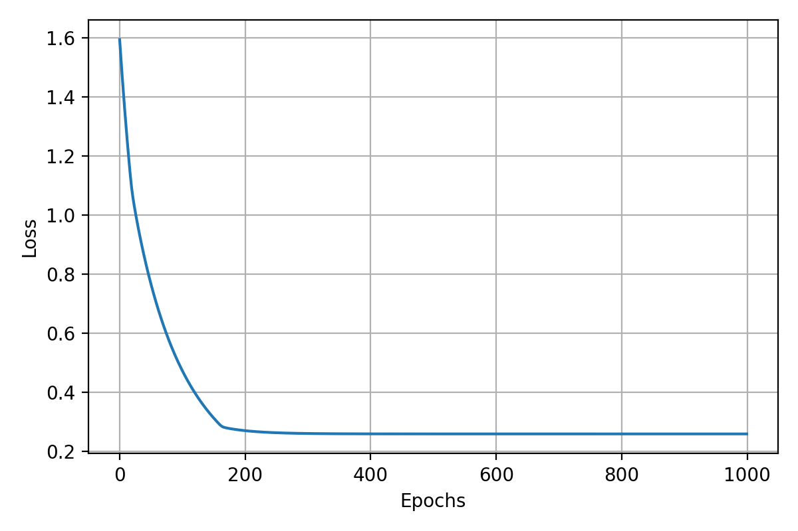
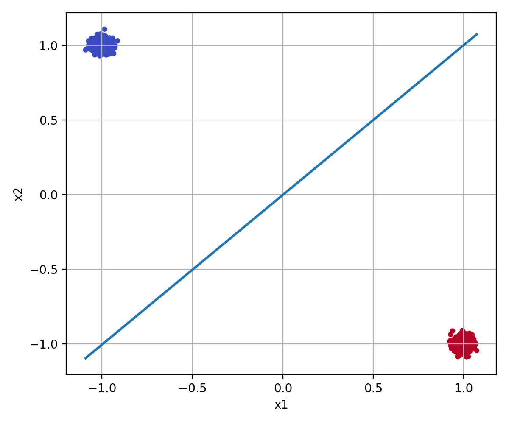

Optimierungsproblem
\[ \min_{\mathbf{w}, b} \frac{1}{2} \|\mathbf{w}\|^2 + C \sum_i \max\{0, 1 - y_i(\langle \mathbf{w}, \mathbf{x}_i \rangle + b)\} \]
In diesem Kapitel wird die SVM nicht nur mathematisch erklärt, sondern Schritt für Schritt in Python umgesetzt: Loss Function, Gradienten, Gradient Descent und Visualisierung.
Wir haben gesehen, dass man durch ein paar mathematische Umformungen zu einem übersichtlichen Optimierungsproblem bzw. einer relativ überschaubaren Kostenfunktion gelangt.
\[ \min_{\mathbf{w}, b} \frac{1}{2} \|\mathbf{w}\|^2 + C \sum_i \max\{0, 1 - y_i(\langle \mathbf{w}, \mathbf{x}_i \rangle + b)\} \]
Wir wollen uns nun damit beschäftigen, die Loss Function als Funktion in Python abzubilden.
In der Implementierung wird die Margin-Strafe als Hinge Loss formuliert und mit de>C gewichtet.
Der Code nutzt einen synthetischen Datensatz mit zwei Klassen, Standardisierung und Label-Umkodierung von de>0/1 nach de>-1/1.
import matplotlib.pyplot as plt
import numpy as np
from sklearn.model_selection import train_test_split
from sklearn.datasets import make_blobs
from sklearn.preprocessing import StandardScaler
X, y = make_blobs(n_samples=1000, centers=2, cluster_std=0.1)
X = StandardScaler().fit_transform(X)
y = 2*y - 1
w = np.random.rand(X.shape[1])
b = np.random.rand()
def svm_loss_function(X, y, w, b, C):
penalties = 1 - y * np.dot(X, w) - b
penalties[penalties < 0] = 0
hinge_loss = C * np.mean(penalties)
loss = 1/2 * np.dot(w, w) + hinge_loss
return loss
svm_loss_function(X, y, w, b, 1)
Alleine mit der Kostenfunktion kommen wir nicht weit – wir müssen die Gradienten dieser nach \(\mathbf{w}\) und \(b\) bilden.
Die Funktion berechnet den Gradienten nach \(\mathbf{w}\) auf Basis aller aktiven Margin-Verletzungen.
Der Gradient nach \(b\) ergibt sich aus der Summe der Labels jener Punkte, für die der Hinge Loss aktiv ist.
Die Gradienten werden mit de>1/m skaliert, also mit der Anzahl der Datenpunkte.
def svm_gradients(X, y, w, b, C):
m = X.shape[0]
margins = 1 - y * (X.dot(w) + b)
active = margins > 0
dw = w - C/m * X[active].T.dot(y[active])
db = -C/m * np.sum(y[active])
return dw, db
svm_gradients(X, y, w, b, 1)
Mit der Loss Function und den Gradienten können wir den Gradientenabstieg direkt implementieren.
Randomisiere den Gewichtsvektor \(\mathbf{w}^{(1)}\).
Wähle ein Target und berechne: \[ \Delta \mathbf{w}^{(i)} = -\eta \nabla \Lambda \big|_{\mathbf{w}^{(i)}} \] \(\eta\): Lernrate.
\[ \mathbf{w}^{(i+1)} = \mathbf{w}^{(i)} + \Delta \mathbf{w}^{(i)} \]
def svm_train(X, y, w, b, C, lr, epochs):
list_of_costs = []
for epoch in range(epochs):
dw, db = svm_gradients(X, y, w, b, C)
w -= lr * dw
b -= lr * db
list_of_costs.append(svm_loss_function(X, y, w, b, C))
return w, b, list_of_costs
w, b, list_of_costs = svm_train(X, y, w, b, 1, 0.01, 1000)
plt.plot(list_of_costs)
plt.xlabel('Epochs')
plt.ylabel('Loss')

Schreiben Sie eine Funktion de>visualize_svm_training, die die trainierten Parameter \(w\), \(b\) nach dem Gradientenabstieg aufnimmt und daraus die entsprechende Hyperebene in den Feature-Raum zeichnet.
Die trainierten Parameter werden genutzt, um die Entscheidungsgerade im Feature-Raum zu zeichnen.
Damit die Visualisierung klappen kann, muss \(w\) normalisiert werden.
de>animate_svm_training speichert Zwischenschritte für \(w\) und \(b\) in Listen und zeigt das Training dynamisch.
Die Funktion stellt die Hyperebene direkt im Datenraum dar und macht das Ergebnis des Trainings sichtbar.
def plot_decision_line(w, b, x_range):
fig, ax = plt.subplots(figsize=(6,5))
xmin, xmax = x_range
xs = np.linspace(xmin, xmax, 400)
norm = np.linalg.norm(w)
w = w / norm
b = b / norm
ys = -w[0] * xs - b / w[1]
ax.plot(xs, ys, linewidth=2, label='decision line')
ax.set_xlabel('x1')
ax.set_ylabel('x2')
ax.legend()
ax.grid(True)
return ys
ys = plot_decision_line(w, b, x_range=(X[:, 0].min(), X[:, 0].max()))
plt.scatter(X[:, 0], X[:, 1], c=y)
